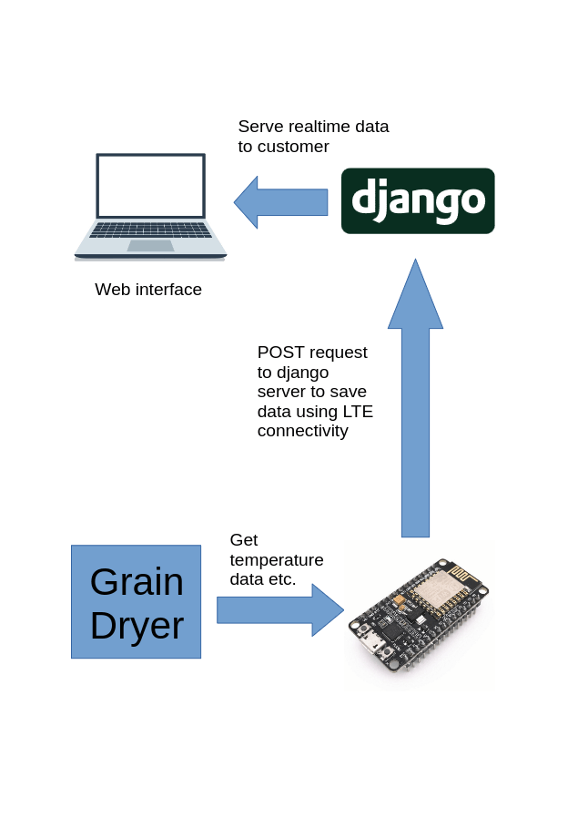
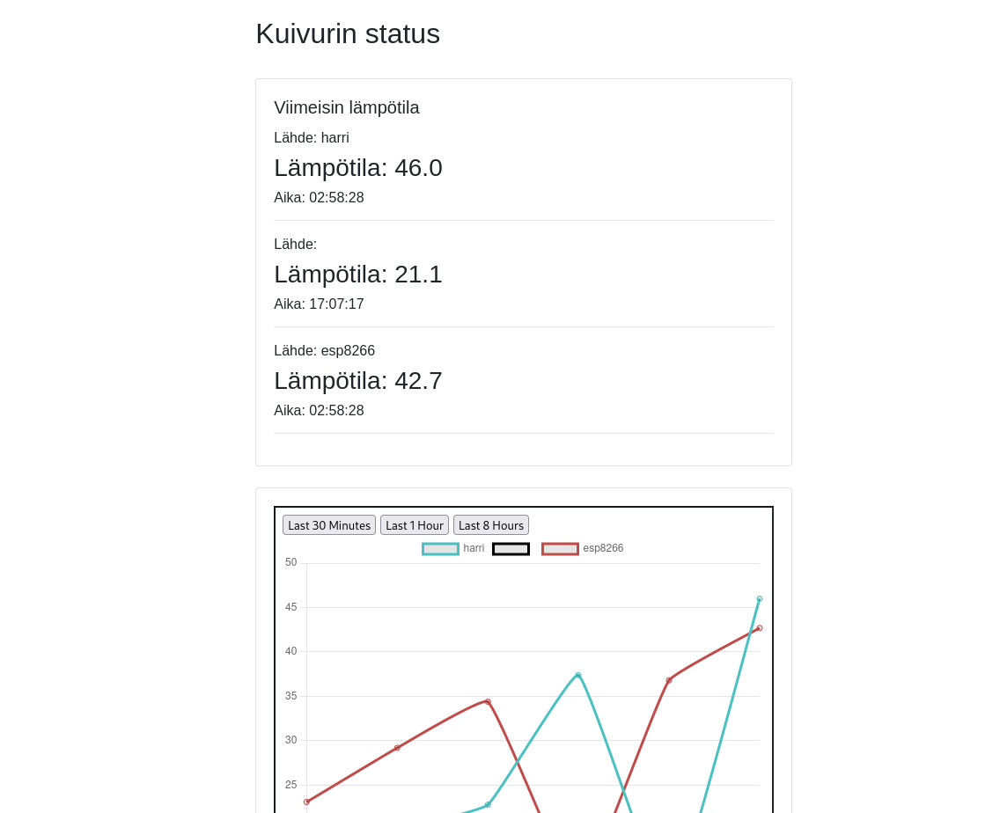

Gallery



Remote monitoring of critical drying properties
Project was ordered by a farmer in Masku with the goal of optimizing efficiency and time-use and eliminating the need to visit the dryer in the middle of the drying process
The Grain Dryer Monitoring System is a solution designed to remotely monitor critical drying properties such as temperature and humidity. This project aims to improve efficiency and reliability in grain drying processes by providing real-time data and statistics.
The backend is built on Django framework that handles saving, receiving and displaying the data.
Hardware on the grain dryer side consists of an ESP8266 microcontroller and a temperature and I2C humidity sensor placed in the dryer exhaust.
The microcontroller is connected via a 4G router to the internet and sends the data to the Django server.
The code is open-source and can be found here
If you have any questions about this project or would like to collaborate, feel free to reach out:
Email: henrik@heiniset.fi
 GitHub
GitHub LinkedIn
LinkedIn